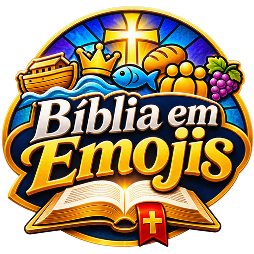

← CARLUDIX
? Como jogar

Bíblia em Emojis
Qual passagem bíblica está representada pelos emojis?
📅 Desafio do Dia
Um enigma por dia
🎯 Treino
Escolha o nível
Como jogar
🌧️🌊🛶🌈
Arca de Noé
Os emojis contam uma passagem da Bíblia, na ordem em que ela acontece.
Digite o nome da passagem ou da história. Não precisa de acento.
Você tem 4 tentativas. Cada erro libera uma dica: Testamento, livro e uma pista.
Acertar de primeira vale 4 pontos. Cada erro ou dica pedida tira 1 ponto.
No Desafio do Dia, todos jogam o mesmo enigma. Ele fica mais difícil ao longo da semana.
Começar a jogar